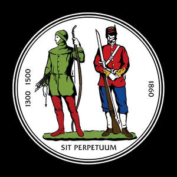
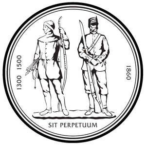

Trade Mark Journal No.2025/009 28 February 2025
UK00004132800 4 December 2024 (13,14,16,18,24,25,28,36,41,42,45)
Mark 1

Mark 2

- Class 13
- Firearms; ammunition and projectiles. .
- Class 14
- Precious metals and their alloys; jewellery, precious and semi-precious stones; medals. .
- Class 16
- Paper and cardboard; printed matter; instructional and teaching materials photographs; stationery and office requisites, instruction manuals and working guides. .
- Class 18
- Leather and imitations of leather; luggage and carrying bags; umbrellas and parasols; gun sling; holsters.
- Class 24
- Textile piece goods for clothing; Textile piece goods for making into clothing; Textile piece goods for making-up into clothing; Coated fabrics for use in the manufacture of leather goods; Textile piece goods (Polyurethane coated -) for making waterproof clothing; Cloths; Cloth; Piece goods (Textile -); Textile goods, and substitutes for textile goods; Household textile goods; Tartan piece goods; Fabrics [piece goods]; Textile piece goods; Textile fabric piece goods for use in the manufacture of clothing.
- Class 25
- Clothing, footwear, headwear; fleeces; uniform; hats; baseball caps; sports clothing. .
- Class 28
- Games, toys and playthings; decorations for Christmas trees; teddy bear; packs of cards .
- Class 36
- Real estate affairs; .
- Class 41
- Education; providing of training; entertainment; sporting and cultural activities; training academy programmes; sporting competitions; training services. .
- Class 42
- Scientific and technological services and research and design relating thereto; industrial analysis and industrial research services; range design; competition design; training programme design. .
- Class 45
- Legal services; .
The National Rifle Association